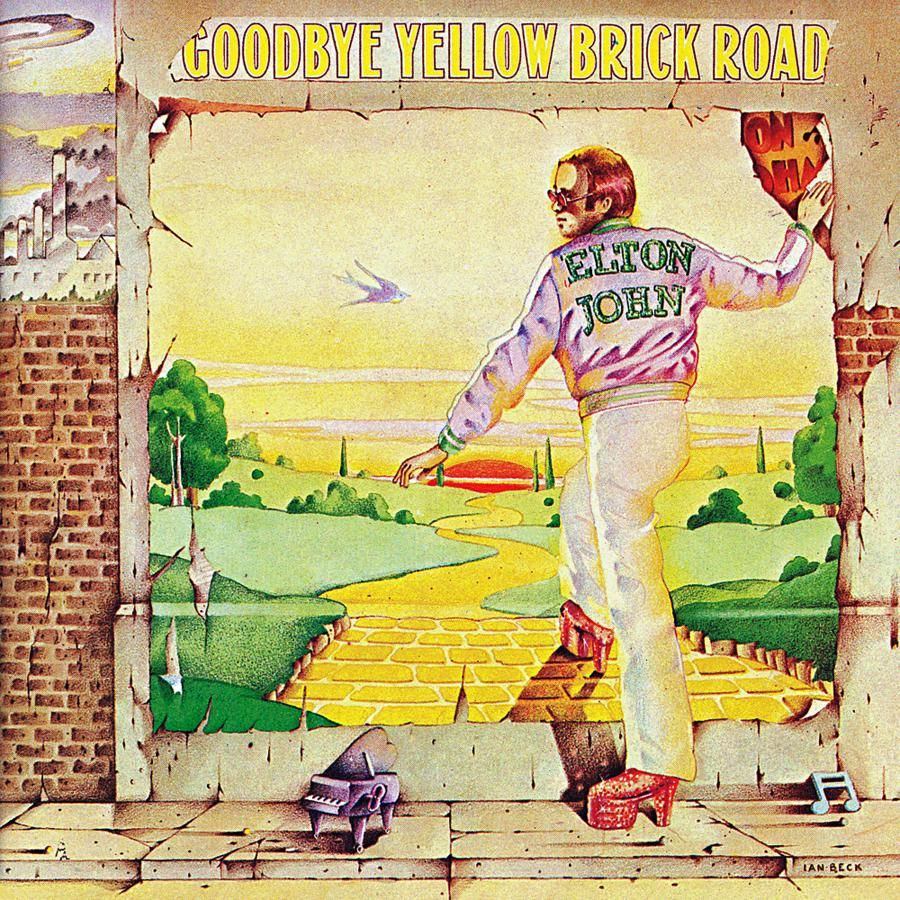

안녕하세요 라보엠입니다.
오늘은 영국의 가수로 기사 작위까지 받은 엘튼 존의 노래 Goodbye yellow brick road (1973)를 소개해드리겠습니다. 엘튼 존하면 Imagine, Your song 등 명곡들이 참 많지만 저는 이 노래를 가장 좋아합니다. 피아노를 쳐본적이 있다면, 이 곡을 연주해보면 왜 그가 천재인지 알 수 있습니다.
엘튼 존 Elton John - goodbye yellow brick road
작곡은 엘튼 존이 했고 작사는 버니 토핀이라는 작사가가 했는데, 곡의 내용은 도시(의 노란 벽돌길)를 떠나 고향에 내려가 마음의 평안을 찾고 싶어하는 내용입니다. 귀농은 요즘에나 유행하는 건줄 알았는데, 1970년대에도 귀농을 하고싶어했다는게 사람 사는게 변하는건 별로 없구나 싶었습니다.
엘튼 존 Elton John - goodbye yellow brick road
1.
When are you gonna come down?
When are you going to land?
I should have stayed on the farm
I should have listened to my old man
언제 내려올래?
언제 고향으로 갈꺼야?
나는 농장에 남았어야 했어
내 아버지의 말을 들었어야 했어
You know you can't hold me forever
I didn't sign up with you
I'm not a present for your friends to open
This boy's too young to be singing
The blues, ah, ah
너도 나를 영원히 잡아 둘 수 없다는걸 알잖아
나는 너와 계약을 하지 않았어
나는 네 친구들을 위한 선물이 아니야
이 소년은 블루스를 노래하기에 너무 어려, 아, 아
So goodbye yellow brick road
Where the dogs of society howl
You can't plant me in your penthouse
I'm going back to my plough
잘 있어 노란 벽돌길
개들이 짖는 곳
너의 펜트하우스에 나를 가둘 수 없어
나는 쟁기질[plough]하러 돌아갈거야
Back to the howling old owl in the woods
Hunting the horny back toad
Oh, I've finally decided my future lies
Beyond the yellow brick road
Ah, ah
늙은 부엉이가 울고 두꺼비를 잡을 수 있는
숲속으로 돌아갈거야
아, 드디어 나는 결정했어
나의 미래는 노란 벽돌길 너머에 있어
2.
What do you think you'll do then?
I bet they'll shoot down the plane
It'll take you a couple of vodka and tonics
To set you on your feet again
내가 떠나면 너는 어떻게 할까?
비행기를 격추할거라 장담하지
다시 일어서려면
보드카와 토닉 몇 잔이 필요할거야
Maybe you'll get a replacement
There's plenty like me to be found
Mongrels who ain't got a penny
Sniffing for tidbits like you On the ground, ah, ah
너는 아마도 다른 사람을 찾을걸
나 같은 사람은 얼마든지 있으니까
무일푼의 잡종들은 얼마든지 있지
당신같이 먹잇감을 찾아다니는 사람들에게 걸려들 사람들 말이야
So goodbye yellow brick road
Where the dogs of society howl
You can't plant me in your penthouse
I'm going back to my plough
잘 있어 노란 벽돌길
개들이 짖는 곳
너의 펜트하우스에 나를 가둘 수 없어
나는 쟁기질하러 돌아갈거야
Back to the howling old owl in the woods
Hunting the horny back toad
Oh, I've finally decided my future lies
Beyond the yellow brick road
Ah, ah
늙은 부엉이가 울고 두꺼비를 잡을 수 있는
숲속으로 돌아갈거야
아, 드디어 나는 결정했어
나의 미래는 노란 벽돌길 너머에 있어
아, 아
Elton John and Billy Joel - Goodbye Yellow Brick Road
빌리 조엘도 이 노래를 많이 불렀는데, 둘이 공연에서 함께 부른적도 있습니다.
